Generative Adversarial Networks
What can GAN do ?
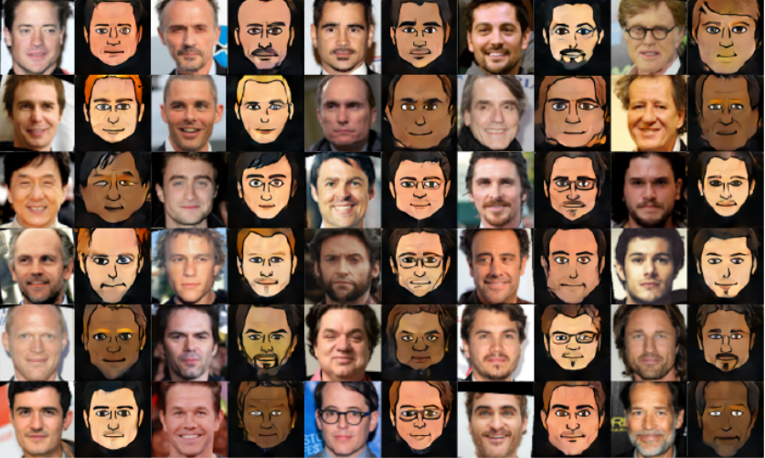
Taigman et al., 2017
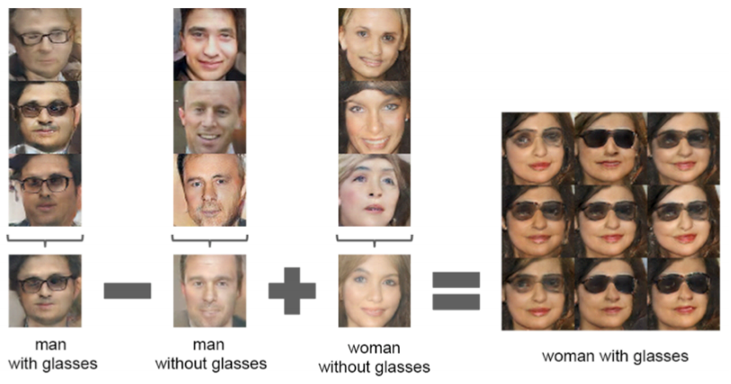
Alec Radford et al. 2015

genekogan@Twitter
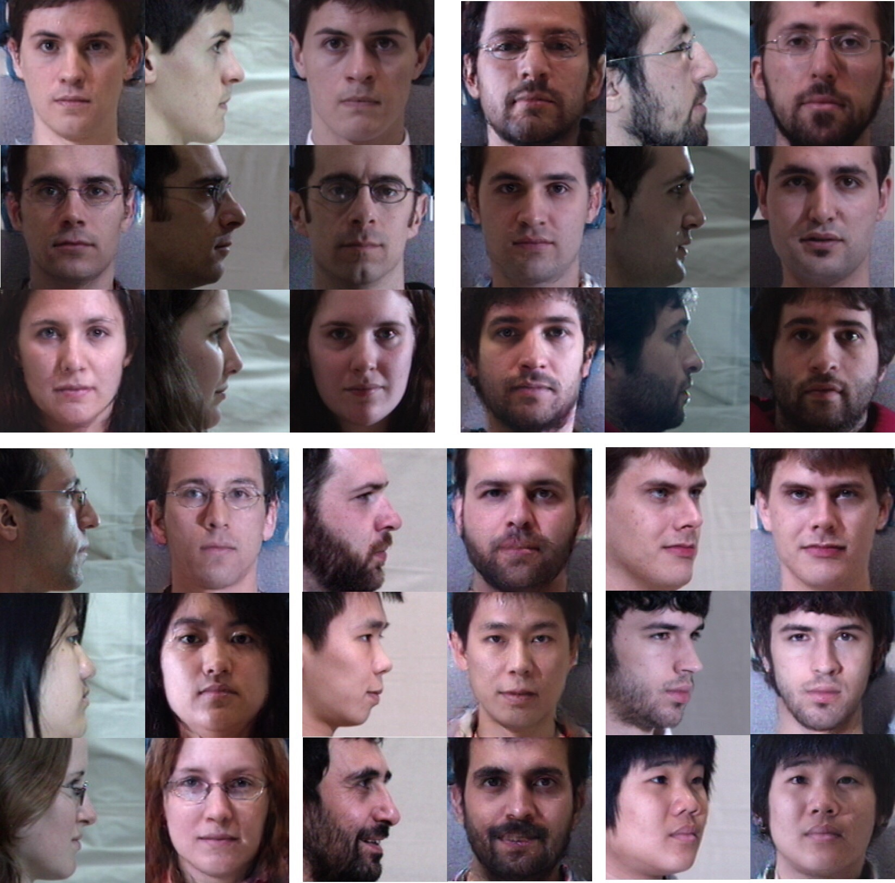
R. Huang et al. 2017

Jun-Yan Zhu et al. 2016
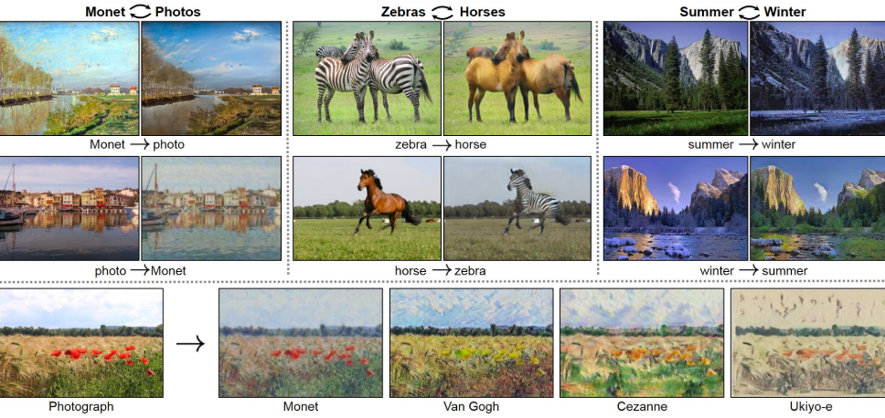
https://junyanz.github.io/CycleGAN/
What is GAN ?
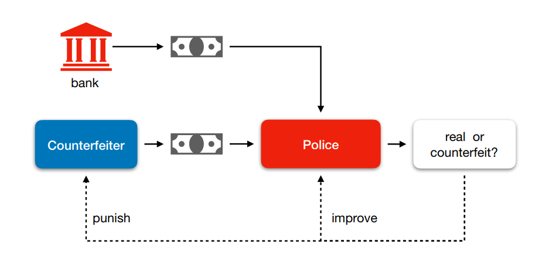
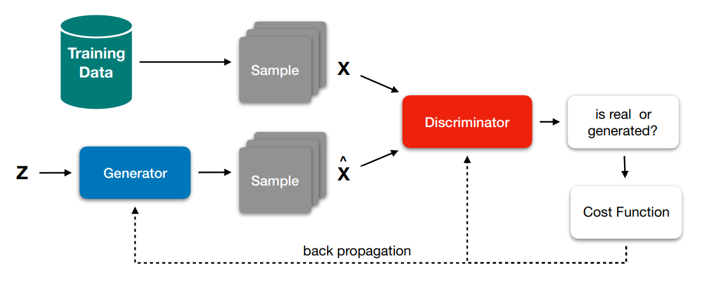
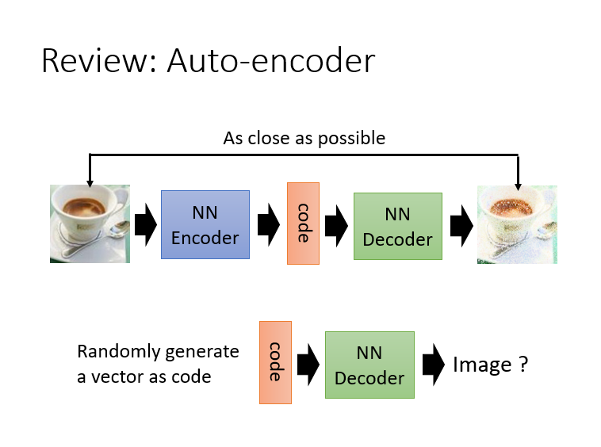
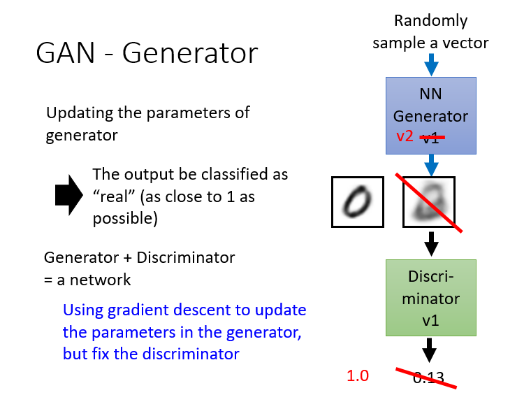
Generator Model
Deep Belief Network (DBN)
Stacked Auto-Encoder (SAE)
Deep Boltzman Machine (DBM)
Variational Auto-Encoder (VAE)
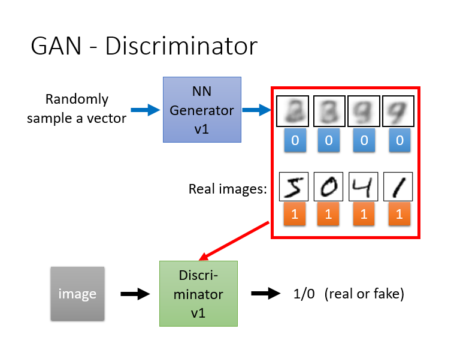
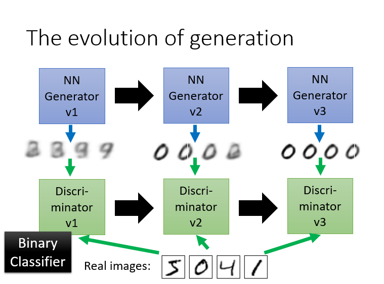
Demo - Generate cartoon faces


Theory & Algorithm

The optimization process is a Minimax game problem, and the optimization goal is to achieve the Nash equilibrium


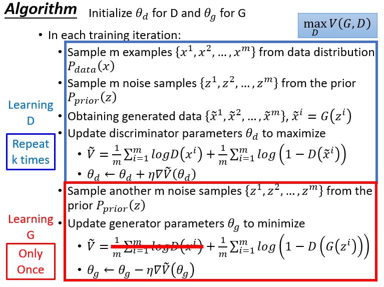

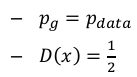
PROs and CONs
PROs
Markov chains are never needed
only backprop is used to obtain gradientsNo inference is needed during learning
A wide variety of functions can be incorporated into the model
GAN can be combined with CNN and RNN
CONs
There is no explicit representation of Pg(x)
D must be synchronized well with G during training
Head First Generative Adversarial Networks
There are more that GAN can do …
Ian Goodfellow et al., 2014
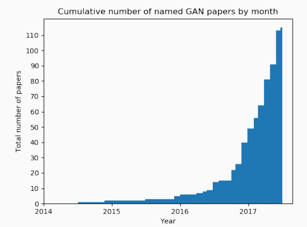
github.com/hindupuravinash/the-gan-zoo as at June 10, 2017
Kinds of GANs

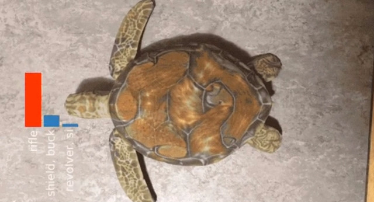
Text to Image
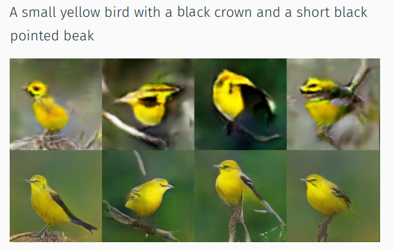
H. Zhang et al. 2016 (StackGAN)
Image to Image
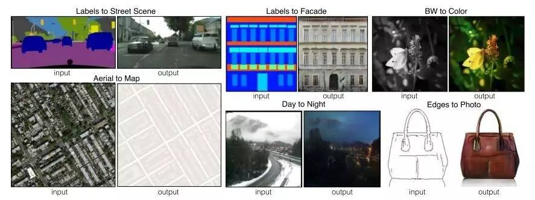
Single Image Super-Resolution
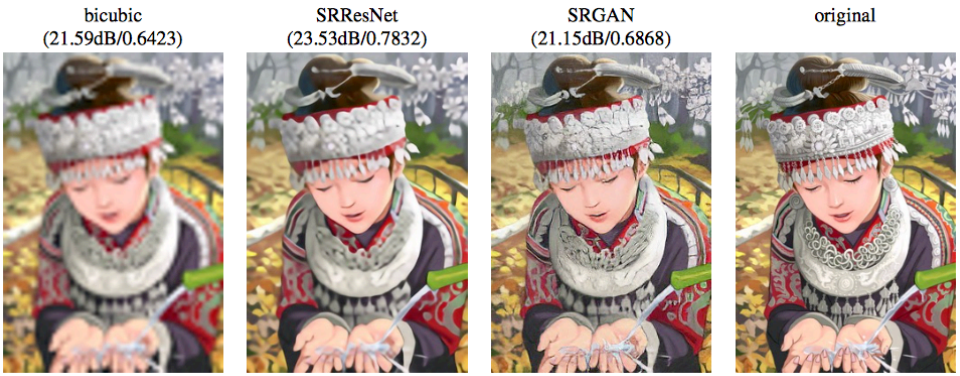
Christian Ledig et al. 2016
Future Research on GANs
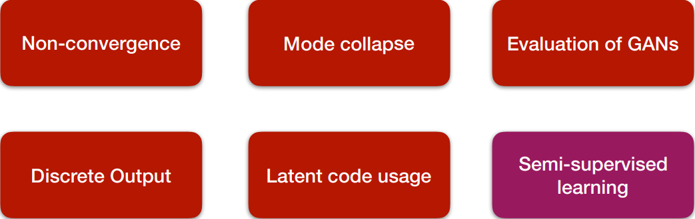
GAN on Speech Processing
Robust Speech Recognition Using Generative Adversarial Networks